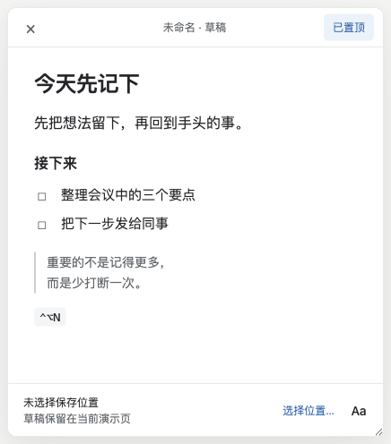
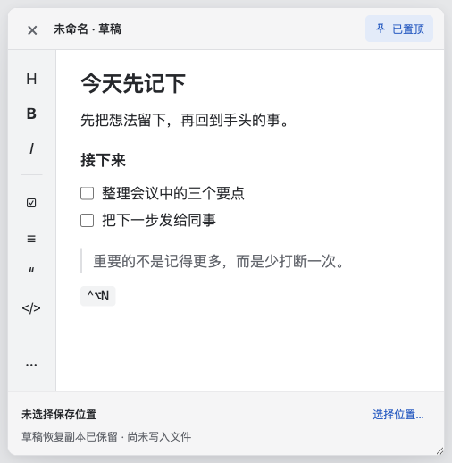
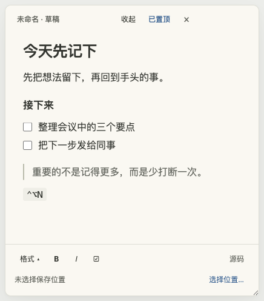

A
极简浮窗
建议首版
正文优先，工具退后。文件名、置顶、保存状态都在一眼能找到的位置。
打开交互原型 →随时唤出，直接编辑 Markdown，放在其它窗口上方参考。首次由你选位置，之后自动保存到同一个文件。

正文优先，工具退后。文件名、置顶、保存状态都在一眼能找到的位置。
打开交互原型 →
常用格式固定在侧边。适合频繁整理标题、待办与代码，代价是多占一点宽度。
打开交互原型 →
写完收成顶部小条，需要时展开。少挡住工作，但增加收起与展开两种状态。
打开交互原型 →所有文本均为演示内容。原型中的保存位置、保存结果、快捷键和置顶均为模拟，不访问你的真实文件。当前只完成审核初稿，尚未修改生产应用。